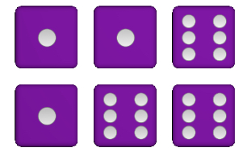
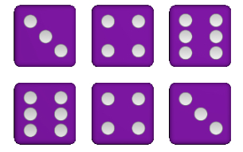
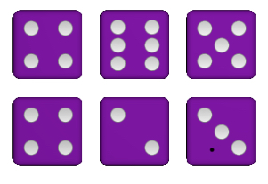
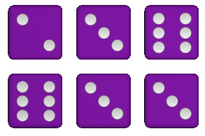
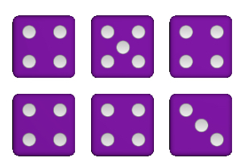
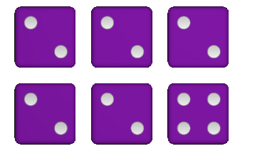

Igra se sa 5 ili 6 kockica. Jedan krug ima 3 bacanja. Prvo se bacaju sve kockice, a u naredna 2 biraju se koje ostaju. Posle trećeg bacanja (ili ranije), upisuju se bodovi u tabelu. Novi krug zatim počinje. Ako se igra sa 6 kockica, računa se samo 5 izabranih.

Suma jedinica = 3
Suma šestica = 18

Max = 23 | Min = 20




Ulaskom počinješ iz poslednje grupe. Pobedа donosi 3 boda, nerešeno 1. Najboljih 5 ide gore, poslednjih 5 ispada.
Učestvuje 20 igrača. Liga traje 3-7 dana. Ulog je 8.000💎. Prvoplasirani osvaja deo nagrade i 🏆.
Možeš izaći iz lige, ali gubiš poziciju. Povratkom počinješ opet iz poslednje grupe.
Pobedama u nizu osvaja se glavna nagrada.
7✪ = 7 pobeda za 7.000.000💎 i 💣
3✪ = 3 pobede za 400.000💎
Ako izgubiš jednu – ispadaš. Možeš se vratiti kad god. Ligu 6✪ možeš igrati samo uz 🎟️ specijalnu ulaznicu.
Srećno! 🎲